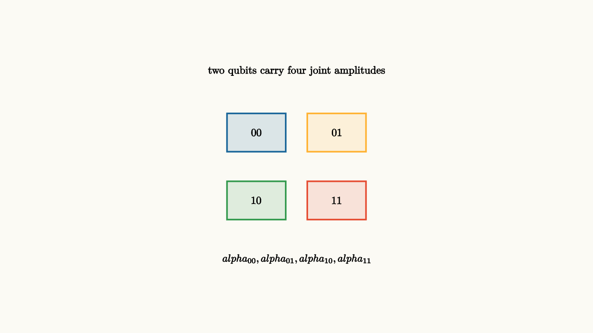

Two classical bits have four possible states: 00, 01, 10, and 11. Two qubits have amplitudes for all four computational basis states:
The probabilities after measurement are squared magnitudes, and the normalization condition is
The size of the state description doubles with each qubit. For $n$ qubits, there are $2^n$ basis amplitudes.
That growth is the first reason quantum systems are hard to simulate. A three-qubit state has eight amplitudes. A ten-qubit state has 1024. A fifty-qubit state has more amplitudes than a small laptop can comfortably store with high precision. The physics is compact in the lab because the system is the state. Our classical description expands.
The basis labels are bit strings, so the notation can look classical. The amplitudes make it quantum. A state with amplitude on many bit strings is still one vector, and gates act on the whole vector at once through linearity. If a gate changes the first qubit, every basis state whose first bit is $0$ or $1$ is updated consistently. That is why a small gate can affect a large table of amplitudes.

source
background = [0.985, 0.98, 0.955, 1]
camera = Camera(4.8b)
let Box = |x, y, label, col| block {
. fill{alpha{0.14} col} stroke{col, 2} center{[x, y, 0]} Rect([0.95, 0.62])
. center{[x, y, 0]} Text(label, 0.62)
}
mesh basis = block {
. Box(-0.65, 0.55, "00", BLUE)
. Box(0.65, 0.55, "01", ORANGE)
. Box(-0.65, -0.55, "10", GREEN)
. Box(0.65, -0.55, "11", RED)
. center{[0, 1.55, 0]} Text("two qubits carry four joint amplitudes", 0.62)
. center{[0, -1.5, 0]} Tex("\\alpha_{00},\\alpha_{01},\\alpha_{10},\\alpha_{11}", 0.60)
}
"joint basis"
play Fade(0.7)The rule for combining independent states is the tensor product. If
and
then
Independent amplitudes multiply. The joint state space is larger than either factor.
Entanglement begins here
Some two-qubit states can be factored into a tensor product of one-qubit states. Others cannot. A Bell state is the standard example:
This state has no amplitude for $01$ or $10$. If one qubit is measured and found to be $0$, the other is also $0$. If one is found to be $1$, the other is also $1$. The correlation belongs to the joint state, not to a pair of hidden one-qubit states.
The tensor product also explains how gates address part of a system. If $X$ acts on the first qubit and the second qubit is left alone, the full operator is
On basis states, it changes $|00\rangle$ to $|10\rangle$ and $|01\rangle$ to $|11\rangle$. The identity factor matters. It says which subsystem is being carried along while the first subsystem is transformed.
Controlled gates use the same combined space. A controlled-NOT has a simple rule on basis states:
Because gates are linear, this rule automatically extends to superpositions. That is how a small table of basis actions becomes a transformation on the whole amplitude vector.
source
param link = 0.0
background = [0.985, 0.98, 0.955, 1]
camera = Camera(4.8b)
let Pair = |link| block {
. fill{alpha{0.14} BLUE} stroke{BLUE, 3} center{[-1.25, 0, 0]} Circle(0.35)
. fill{alpha{0.14} ORANGE} stroke{ORANGE, 3} center{[1.25, 0, 0]} Circle(0.35)
. center{[-1.25, 0, 0]} Text("q1", 0.62)
. center{[1.25, 0, 0]} Text("q2", 0.62)
. stroke{GREEN, 3} Line(start: [-0.9, 0, 0], end: [-0.9 + 1.8 * link, 0, 0])
. center{[0, 1.35, 0]} Text("entanglement is joint structure", 0.62)
. center{[0, -1.2, 0]} Tex("\\frac{|00\\rangle+|11\\rangle}{\\sqrt2}", 0.68)
}
"separate qubits"
mesh pair = Pair(link: $link)
play Fade(0.6)
"joint state"
link = 1.0
pair = Pair(link: $link)
play Lerp(1.0)
"operator view"
pair = block {
. center{[0, 1.45, 0]} Text("local gates become tensor-product operators", 0.62)
. center{[-1.45, 0.35, 0]} Tex("X\\otimes I", 0.72)
. stroke{BLACK, 3} Arrow(start: [-0.65, 0.35, 0], end: [0.35, 0.35, 0])
. center{[1.15, 0.35, 0]} Tex("|00\\rangle\\mapsto |10\\rangle", 0.60)
. center{[0, -0.85, 0]} Text("basis rules extend linearly to every superposition", 0.62)
}
play Trans(1.0)The connecting line is only a symbol. Entanglement is the fact that the joint amplitude table cannot be built from independent one-qubit amplitude lists.
There is a useful caution here. Since the state vector has $2^n$ amplitudes, it is tempting to say a quantum computer simply tries all answers at once. Measurement blocks that shortcut. We do not get to read all amplitudes. A useful algorithm must shape the whole tensor-product state so one measured sample reveals a property. The large state space is the stage. Interference is the choreography that makes the stage useful.
Tensor products also organize memory. If the first register holds an input and the second register holds workspace, the combined state may be written as
A reversible computation can turn this into
Now the input and workspace may be entangled. If the workspace is later erased by reversing the computation, the state can return to
with a useful phase left on the input register. This pattern, compute, phase, uncompute, appears throughout quantum algorithms.
The lesson to keep
Tensor products are the grammar for combining quantum systems. They multiply basis states and create joint amplitudes. Product states describe independent systems. Entangled states describe correlations that live in the combined space. Multi-qubit computing starts when gates deliberately shape that joint amplitude table.